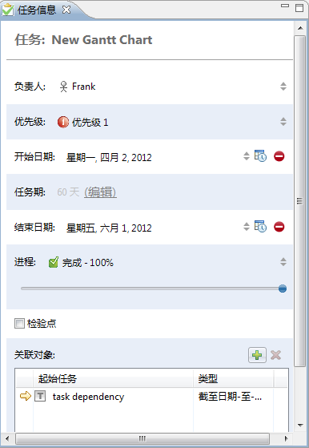
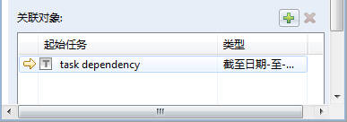
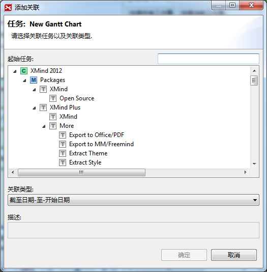

XMind专业版中添加了"任务信息"的功能，您可以在任务信息的视图中，为每个主题添加各自相关的任务信息。您可以添加任务的开始、结束时间，优先级，进度等信息。方法如下：
- 选中一个主题。
- 打开任务信息视图。
- 视图中，您可以看到以及修改下列信息：
- 任务名称：即主题的内容；
- 负责人：填入该任务的负责人；
- 开始和结束时间：为当前任务挑选开始和结束时间；
- 进度：调整滑块、选择进度或者直接输入数字来调整当前任务的进度；
- 优先级：为任务选择合适的优先级；
- 检验点：若激活，则此任务在甘特图视图中不显示任何进度信息。
- 任务关联：您可以在此将选中的任务同其他任务建立依赖关系。

任务关联
在项目实施过程中，您可能会经常需要为某两个任务之间建立一种依赖关系。现在，您可以很方便地在XMind里面做到这点。
- 选择任务 A
- 进入任务信息视图(从菜单选择 视图 --- 显示 任务信息)
- 滚动到视图的底部，在任务关联一栏点击 加号

- 在对话框中选择任务B，
- 确定依赖关系的类型
- 截止日期-至-开始日期, 任务A的 开始日期 不得早于任务B的 截止日期.
- 开始日期-至-截止日期, 任务A的 截止日期 不得早于任务B的 开始日期.
- 开始日期-至-开始日期, 任务A的 开始日期 不得早于任务B的 开始日期.
- 截止日期-至-截止日期, 任务A的 截止日期 不得早于任务B的 截止日期.
- 点击完成
任务关联添加对话框
注意：在甘特图中，所有有任务信息的主题都会被同步显示出来。
您可能还对下列内容感兴趣：